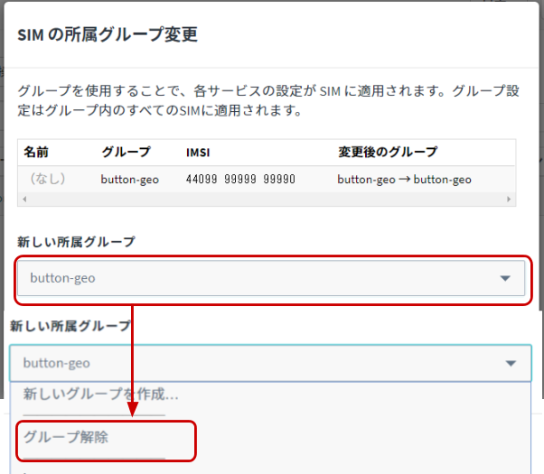
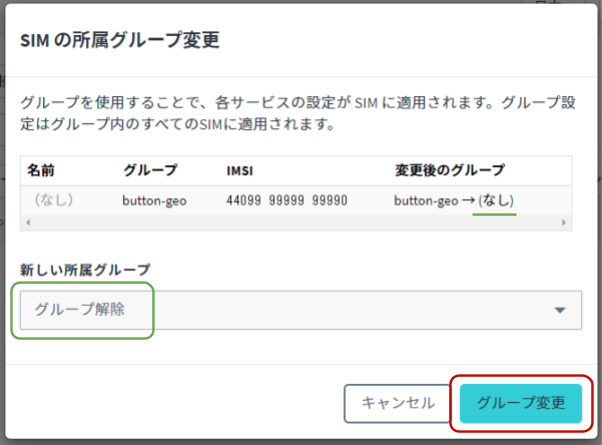
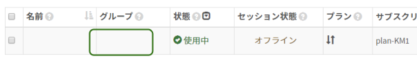
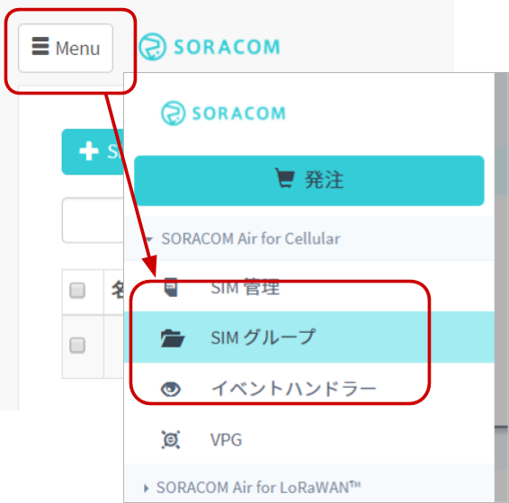
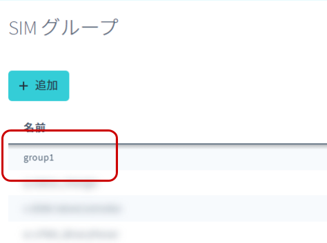
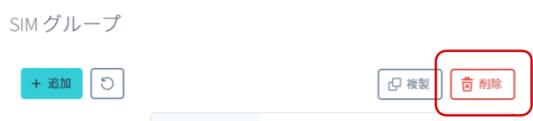
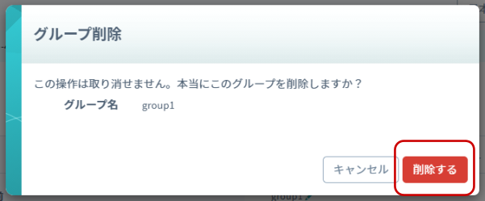

グループからの解除方法を解説しています。
できるようになる事
- グループからの解除
- グループの削除
このハンズオンでサポートしない事 (前提知識)
- SORACOM アカウントの作成 (こちらで学べます)
- SIM の発注や入手方法 (発注はこちら(準備中)で学べます)
- SORACOM ユーザーコンソールの利用方法
このコンテンツの進め方
ページの内容を読み、また作業を行ったら右下の［Next］を押して次のステップへ進みます。また、［Back］を使って戻ったり、左のナビゲーションメニューでもページの移動が可能です。
左上の［×］を押してコンテンツを終了することができます。また、ページを開きなおすことで再開できます。ページのアドレスはブラウザの［履歴］メニューを利用してください。
SORACOM ユーザーコンソールにログインした後［Menu］>［SIM 管理］とクリックして SIM 管理画面を開きます。

グループ解除を行いたい SIM にチェックを付け、［操作］>［所属グループ変更］とクリックします。

「新しい所属グループ」のプルダウンボックスをクリックした後、［グループ解除］をクリックします。

新しい所属グループが グループ解除 / (なし) になっていることを確認したら［グループ変更］をクリックします。

自動的に SIM 管理画面に戻ります。
SIM の「グループ」が空になったことを確認してください。

以上で、グループ解除の作業は完了です。
グループが不要になったら削除することができます。
削除ができる条件
グループ内に SIM が所属していると削除ができません。グループに紐づいている SIM を全て外してから削除作業を行ってください。
［Menu］>［SIM グループ］とクリックします。

削除を行いたい SIM グループをクリックします。

［削除］をクリックします。
この時点では未だグループは削除されません。

最終確認ダイアログで［削除する］をクリックします。
クリックした瞬間に削除されます。
削除された後は回復する事が出来ません。対象を確認してから削除するようにしてください。

以上でグループの削除は終了です。